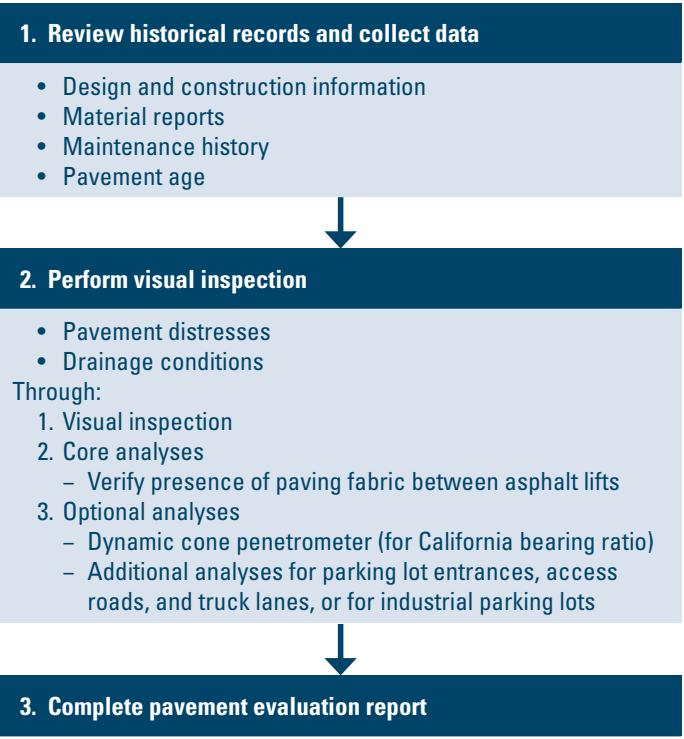
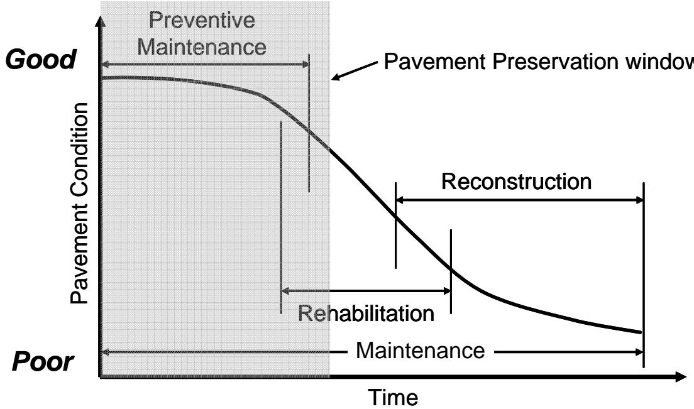
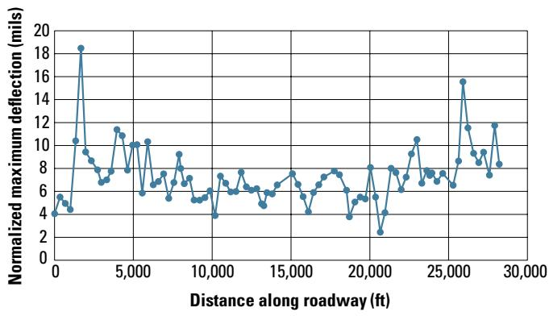
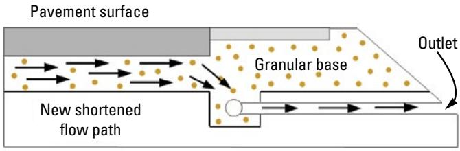
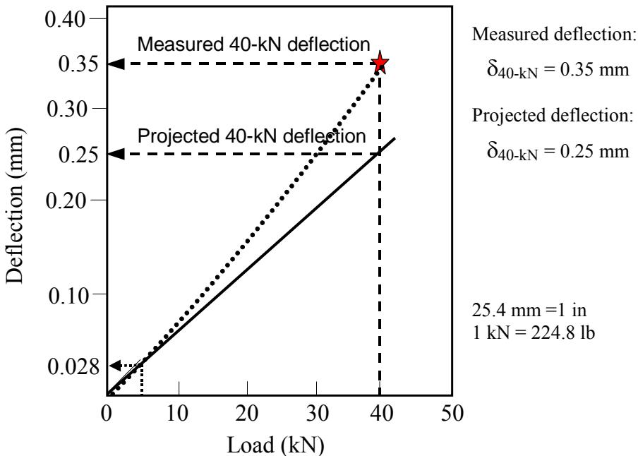

Field Evaluation Report Preparation
Field Evaluation Report Preparation is the process of consolidating and interpreting all existing roadway information—including design and construction documents, material test results, maintenance histories, traffic data, climate studies, and direct site observations—to create a factual baseline for assessing an existing asphalt or concrete pavement system [2][3][4][5][6][7]. It combines a visual inspection that records distress, surface roughness, friction, shoulder condition and drainage problems with material sampling, utility‑depth checks, and nondestructive measurements such as LiDAR profiling, roughness surveys, and intensified deflection testing when moisture or roughness cues indicate deeper issues [2][3][7]. The final report segments the corridor into sections sharing uniform structural and functional characteristics, identifies critical non‑pavement constraints (e.g., geometry, bridges, ADA requirements), evaluates remaining structural capacity against original design loads, and supplies the definitive data set that guides scoping, design alternatives, and preservation or rehabilitation strategies [2][3][4][5][6][7].
Sources (7)
Purpose and investigation objectives
The investigation evaluates the existing pavement system—whether asphalt or concrete—including its surface condition, structural capacity, layer thicknesses and subgrade characteristics, together with site‑specific factors such as drainage adequacy, utility depths, corridor geometry, shoulder integrity, right‑of‑way constraints, bridges, ramps, ADA requirements and prevailing traffic patterns. It must answer whether drainage issues exist, how deep utilities are, what the overall condition of the pavement is along the corridor, whether the geometric design meets standards, what traffic levels have been experienced versus original design loads, which traffic‑control alternatives are viable during construction, what types and severities of distress (cracking, corner breaks, roughness, friction loss) are present, how moisture or pumping problems indicate subsurface drainage conditions, what the original design specifications and construction details were, and what caused any observed pavement failure so that appropriate treatment alternatives can be selected. [2][3][4][5][6][7]
The following figure illustrates the systematic process used to evaluate such conditions.

Flowchart of a pavement condition assessment for an asphalt parking lot [6]The figure illustrates a three-step workflow for evaluating existing pavement systems, beginning with the review of historical records and data collection.
[2] — Ch. 3 (p. 38); [3] — Ch. 3 (pp. 40–42); [4] — Ch. 1 (p. 24); [5] — 2 Types and Mechanisms of Join… (p. 18); [6] — Step 1. Review Historical Reco… (p. 16); [7] — Ch. 3 (pp. 34–40)
The field evaluation report consolidates the full spectrum of existing‑roadway information—historical design and construction documents, material and subgrade test results, maintenance histories, traffic measurements, climate studies, and direct site observations. By translating observations such as drainage deficiencies, utility depth locations, pavement condition ratings, geometric alignment and traffic volumes into actionable data that guide the scoping and design phases, engineers obtain a factual baseline for segmenting the corridor into sections with uniform structural and functional characteristics. The compiled historical design details, construction practices, and operational maintenance records—such as foundation system characteristics, drainage provisions, design life expectations, mixture proportions, equipment used, compaction quality, pavement age, salting regimes, joint sealing history, and observed condition data—enable verification of whether the existing pavement meets its intended performance criteria and highlight deficiencies that may require redesign or targeted rehabilitation. The report also identifies all critical non‑pavement factors that could impact treatment selection, including shoulder condition, ditches, right‑of‑way, geometrics, bridges, ramps, ADA requirements, and traffic patterns. Quantified distress types, surface roughness, friction, moisture problems, and drainage observations provide the basis for prioritizing maintenance actions, justifying rehabilitation scopes, selecting cost‑effective preservation or overlay treatments, and supporting cost‑feasibility studies. Consequently, the findings serve planners, designers, and asset managers as the definitive data set for planning new construction, defining design parameters, scheduling routine maintenance, and formulating long‑term rehabilitation strategies. [2][3][4][5][6][7]
The following figure illustrates the distinctions between these treatment strategies by defining pavement preservation, rehabilitation, and reconstruction.

Schematic representation of pavement condition over time illustrating the timing and scope of preventive maintenance, rehabilitation, reconstruction, and corrective maintenance. [7]The figure displays a graph plotting Pavement Condition on the vertical axis against Time on the horizontal axis, showing a curve that declines from Good to Poor condition over time. Shaded regions and arrows indicate specific intervention windows: Preventive Maintenance occurs early in the pavement’s life while conditions are still good, Rehabilitation is applied as deterioration accelerates, and Reconstruction addresses the pavement when it has reached a poor state.
[2] — Ch. 3 (p. 38); [3] — Ch. 3 (pp. 40–42); [4] — Ch. 1 (p. 24); [5] — 2 Types and Mechanisms of Join… (p. 18); [6] — Step 1. Review Historical Reco… (p. 16), Step 3. Complete a Pavement Ev… (p. 19); [7] — Ch. 3 (pp. 30–36)
Scope and applicability
The guides agree that a Field Evaluation Report is appropriate when the project involves existing asphalt pavements or concrete pavements and their underlying layers, requiring a visual assessment combined with material sampling of the existing asphalt pavement and underlying materials. It should be prepared where pavement information such as distress, surface roughness, surface friction, shoulder conditions, and moisture/drainage problems should be gathered, including observable distresses like surface cracking, loss of friction, deteriorated shoulder conditions, and moisture‑related issues (e.g., pumping, corner breaks, standing water). The preparation is also warranted under site factors such as drainage issues, utility depths, overall corridor geometry, traffic volumes, and any observed pavement failures. Additionally, an initial assessment of traffic control constraints, obstructions, right‑of‑way zones, the presence of bridges and other structures, ADA compliance considerations, and general safety concerns should be made during this visit. [2][3][7]
The following figure illustrates an example of a project strip chart used to document these field evaluation details.
 Example of a project strip chart showing concrete slab cracking severity and roughness. [3]
Example of a project strip chart showing concrete slab cracking severity and roughness. [3]
The figure displays a project strip chart that plots the percentage of cracked slabs by severity level against distance along the pavement section, while also overlaying an International Roughness Index (IRI) curve. The chart segments the corridor into areas with different drainage and traffic conditions to summarize distress survey results for a project. This visualization consolidates pavement condition data to provide insight into overall performance, which serves as factual baseline information for assessing an existing concrete pavement system.
[2] — Ch. 3 (p. 38); [3] — Ch. 3 (pp. 40–41); [7] — Ch. 3 (p. 34)
The preparation of a field evaluation report is constrained by several inherent limitations. First, it depends heavily on historical pavement loading records; however, past pavement loading data can be difficult to obtain and may have questionable accuracy, and Complete historical information on the project is desirable, although it may not always be available. Second, the initial site visit yields only subjective information on distress, road roughness, surface friction, shoulder conditions, and moisture/drainage problems, which cannot fully quantify severity or underlying causes. When these gaps arise—such as missing loading histories, incomplete archives, or limited visual insight—the desktop assessment cannot reliably estimate remaining structural capacity. Additionally, traffic‑control restrictions on high‑volume corridors often limit the crew’s ability to conduct detailed inspections, forcing reliance on rapid surveys rather than comprehensive pavement examinations. Under such circumstances, complementary investigations become necessary: Observations of moisture/drainage problems (e.g., pumping, corner breaks, standing water, and so on) may indicate the need for a more intensive deflection testing program or a more thorough investigation of subsurface drainage conditions. Roughness anomalies that suggest differential sag or swell likewise warrant a rigorous measurement program. Employing these supplemental methods restores confidence in the condition assessment and supports appropriate preservation treatment selection. [3][7]
The following figure illustrates how center slab deflection varies along a project when normalized to a standard loading, demonstrating the type of supplemental data used to address assessment gaps.

Center slab deflection variation along a project normalized to a 9,000 lbf loading. [3]The figure plots the normalized maximum deflection in mils against the distance along the roadway in feet for a concrete pavement section. Deflections are referenced directly to project stationing so that they can be related to distress, drainage, materials, and subgrade surveys. This data is used to identify subsections within the project where adverse conditions may exist and to assess structural condition.
[3] — Ch. 3 (pp. 40–46); [7] — Ch. 3 (p. 34)
Existing information and records
The desktop study should begin by assembling all historical documentation for the segment. This includes the original Design reports and the associated Construction plans/specifications (new and rehabilitation) that describe pavement type, layer thicknesses, subgrade conditions, and any later widening or reconstruction work. Laboratory test results and published material‑soil property reports are consulted to understand the foundation system and aggregate gradation. Past performance is captured through Past pavement condition surveys, nondestructive testing and/or destructive sampling investigations, which provide structural and functional ratings as well as distress histories. Maintenance and repair histories—including joint sealing, salting practices, and previous preservation treatments—are reviewed to identify trends in service life. Traffic loading is evaluated using the segment’s traffic information—historical volumes, forecasts, and any measured axle loads—to define current and future stresses on the pavement. In addition, the agency’s pavement‑management system is accessed for condition segmentation data and performance metrics, while satellite or UAV imagery and right‑of‑way videos are used as supplemental “windshield” surveys before field work. [2][3][5][6][7]
[2] — Ch. 3 (p. 38); [3] — Ch. 3 (pp. 40–42); [5] — 2 Types and Mechanisms of Join… (p. 18); [6] — Step 1. Review Historical Reco… (p. 16); [7] — Ch. 3 (pp. 34–40)
Because desktop studies frequently lack current information, the field evaluation must close gaps concerning how water drains from the roadway, the exact depth and location of buried utilities, the true condition of the asphalt and underlying layers along the entire corridor, the as‑built geometric profile, present traffic volumes, and the feasibility of construction‑phase traffic control. Historical documentation often lacks complete traffic‑loading histories, and the load data that do exist are frequently difficult to locate and of uncertain accuracy, creating doubt about cumulative pavement stress. Design reports, construction specifications, material test results, condition surveys, maintenance logs, and climate or management records may be missing, outdated, or inconsistent, requiring on‑site verification to confirm section boundaries, current structural capacity, and actual performance against original design assumptions. The existing desktop sources—satellite imagery, video logs, and pavement management system data—also fail to provide current, site‑specific details on distress types, surface roughness values, friction levels, shoulder conditions, and moisture or drainage problems. Field investigators must directly observe distress, measure roughness and friction, assess shoulder and drainage conditions, and identify issues such as pumping, corner breaks, standing water, or other drainage deficiencies that may trigger more intensive deflection testing or subsurface studies. Historical records only provide past project information, leaving uncertainty about the current state of the pavement and any recent or ongoing maintenance actions; therefore gaps concerning actual surface distress, condition classifications, and the influence of recent repairs must be resolved through a visual on‑site survey with input from the local maintenance engineer. Missing design details such as the foundation system, aggregate gradation, drainage layout, intended design life, and specified mixture parameters must be clarified. Gaps in construction records—including weather conditions at time of work, the state of the foundation, compaction quality, equipment used, actual on‑site water additions, and any problems recorded during construction—require field investigation. Uncertainties about operation and maintenance—pavement age, salting practices, joint sealing and sealant upkeep, past structural and functional condition surveys, and drainage conditions—must be addressed on site. Absent or incomplete original design data, subgrade/subbase information, and prior laboratory test results also need verification through inspection. Insufficient traffic information and a lack of previous distress survey data are additional record deficiencies that field work must resolve. [2][3][4][5][6][7]
The following figure illustrates how deflection varies along a project to help resolve uncertainties about structural capacity and performance.
 Plot of normalized maximum pavement deflection versus distance along the roadway. [7]
Plot of normalized maximum pavement deflection versus distance along the roadway. [7]
The figure displays a line graph plotting normalized maximum deflection against the distance along the roadway, illustrating how surface deformation varies spatially across the project. This data is used to assess the uniformity of support conditions and identify subsections within a project where distress or poor moisture conditions may be affecting the pavement structure. By referencing deflection measurements directly to stationing, engineers can relate these variations to material and subgrade surveys, which is a critical step in consolidating roadway information for field evaluation.
[2] — Ch. 3 (p. 38); [3] — Ch. 3 (pp. 40–46); [4] — Ch. 1 (p. 24); [5] — 2 Types and Mechanisms of Join… (p. 18); [6] — Step 1. Review Historical Reco… (p. 16); [7] — Ch. 3 (p. 40)
Visual inspection and condition assessment
The field evaluation should include a visual inspection that looks for drainage problems and assesses the overall pavement condition along the entire corridor. Inspectors record all visible pavement distress, including overall surface roughness and loss of friction, as well as the condition of shoulders. General distress such as cracking or faulting is noted, and roughness that may indicate differential sag or swell is documented. Moisture‑related and drainage issues receive particular attention; observations of pumping, corner breaks, standing water, or other drainage deficiencies are recorded because they often trigger more detailed testing. [2][3][7]
The following figure illustrates how adding a longitudinal edgedrain can resolve drainage deficiencies by improving granular base drainability.

Schematic of a longitudinal edgedrain installation reducing the flow path within a granular base. [3]The figure displays a cross-section of a pavement structure, showing a ‘Pavement surface’ overlying a ‘Granular base’. Arrows indicate water flow through the granular material towards an installed pipe labeled as an ‘Outlet’, which creates a ‘New shortened flow path’.
[2] — Ch. 3 (p. 38); [3] — Ch. 3 (pp. 40–41); [7] — Ch. 3 (p. 34)
Field measurements and testing
Field evaluation begins with a visual assessment of the roadway to identify surface distresses, roughness, friction, shoulder condition and moisture‑related drainage issues. This subjective information is complemented by material sampling of the existing asphalt pavement and underlying layers to determine composition and failure causes, and depth checks of existing utilities to measure clearance from the pavement structure. Nondestructive three‑dimensional data are obtained with Light Detection and Ranging (LiDAR) technology mounted on a stationary platform, vehicle or UAV; LiDAR quantifies distress severity, maps drainage features, captures longitudinal and transverse profiles, and records clearances. Roughness profiling and surface‑friction checks reveal skid‑resistance levels and can highlight sagging or swelling problems. When moisture or drainage deficiencies are observed, an intensified deflection testing program is added to gauge pavement stiffness, infer subgrade conditions, and assess subsurface drainage performance. Together these tests and measurements indicate the type and severity of surface failures, structural response, subsurface conditions, and utility conflicts that inform design and treatment selection. [2][3][7]
[2] — Ch. 3 (p. 38); [3] — Ch. 3 (pp. 40–41); [7] — Ch. 3 (p. 34)
The scope and detail of field testing are driven by observations made during the initial site visit: distress cues set the collection interval, determine how many surveyors are needed and whether extra measurement equipment is required; pronounced roughness can demand a more rigorous measurement program; and signs of moisture or drainage problems may call for an intensive deflection‑testing effort. Testing is generally performed without traffic control unless high traffic volumes create a safety hazard. [7]
The following figure illustrates the recommended deflection testing locations for jointed concrete pavements.
 Recommended deflection testing locations for jointed concrete pavements. [7]
Recommended deflection testing locations for jointed concrete pavements. [7]
The figure illustrates a schematic layout of a pavement section divided into intervals, indicating specific points for basin and load-transfer testing relative to transverse joints. It visually defines the spatial relationship between test locations—such as mid-slab and corners—and structural features like the approach and leave sides of a joint, which is essential for gathering data on load transfer efficiency.
[7] — Ch. 3 (p. 34)
Structural and functional performance
The guides require that the initial site visit capture pavement distress, surface roughness and surface friction as core functional‑condition measurements. “subjective information on distress, road roughness, surface friction, shoulder conditions, and moisture/drainage problems should be gathered”. Roughness data may dictate the need for a more rigorous measurement program to address any differential sag/swell problems, while observations of moisture/drainage problems … may indicate the need for a more intensive deflection testing program to evaluate structural capacity. When such indications arise, additional quantitative tests—“such as load‑transfer or layer‑thickness assessments”—are incorporated into the field evaluation report. [3][7]
[3] — Ch. 3 (pp. 40–41); [7] — Ch. 3 (p. 34)
Data interpretation and diagnosis
The preparation of a field evaluation report starts by assembling all relevant historical records—design reports, construction plans, past pavement condition surveys (visual observations), nondestructive testing or other field measurements, laboratory test results on materials and soils, traffic and performance data, and maintenance histories. The final field evaluation report then brings together all information gathered during the pavement assessment—records review, visual observations from the site visit, quantitative field measurements, laboratory test results, and subsequent data analyses—into a single, coherent summary. By reviewing these sources together, the evaluator can group the roadway into discrete sections that share similar design attributes and observed performance, creating a consistent framework for interpreting the combined visual, measured, lab‑derived, and performance information when selecting appropriate treatments. Presenting these diverse inputs side‑by‑side enables engineers to interpret how observed conditions and measured performance relate to one another, identify any non‑pavement constraints (such as shoulder condition or traffic patterns), and inform the selection of treatment alternatives. [3][7]
[3] — Ch. 3 (p. 42); [7] — Ch. 3 (p. 34)
During a field evaluation reviewers focus on identifying why pavement distress occurs, and across the guides the primary likely cause identified is inadequate drainage. Visual inspections that note moisture‑related distresses such as pumping, corner breaks, standing water, or other signs of poor subsurface drainage are interpreted as evidence that drainage deficiencies are contributing to the observed condition. While these drainage problems may trigger additional testing (e.g., deflection surveys) to explore possible material deterioration or weak support, the guides treat inadequate drainage itself as the confirmed likely cause. [2][7]
The following figure illustrates how inadequate drainage can lead to potential deterioration of the subbase near CRCP structural distress.
 Diagram of subbase disintegration and pumping associated with concrete pavement distress. [7]
Diagram of subbase disintegration and pumping associated with concrete pavement distress. [7]
The figure displays a cross-section of a rigid pavement system where the underlying granular support layer is shown as broken, loose material beneath a fractured slab. Red lines on the surface represent cracks and joints, while text labels identify ‘Subbase Disintegrated’ and ‘Considerable Pumping and Excess Water’.
[2] — Ch. 3 (p. 38); [7] — Ch. 3 (p. 34)
Findings, confidence, and next actions
“Drainage issues” can be documented, and the field evaluation report “substantiate a range of concrete conclusions about an existing roadway.” It “confirms the presence and severity of drainage problems,” records “pavement information such as distress, surface roughness, surface friction, shoulder conditions, and moisture/drainage problems should be gathered,” and captures corridor geometry, traffic volumes, and viable construction‑traffic‑control alternatives. By integrating historical design data, “Original design data (if available)” and “Construction information” together with “Subgrade/subbase data,” the report enables segmentation of the pavement into discrete sections that share similar design and performance histories – “The information gathered in this step can be used to divide the pavement into discrete sections with similar design and performance characteristics for the pavement evaluation.” It also provides a preliminary estimate of remaining structural capacity by comparing original design traffic loads with cumulative traffic, allowing assessment of how much of the expected service life has been consumed – “the results of which can then be compared to the actual pavement performance to see how much of the expected service life has been consumed.” Critical non‑pavement elements are identified – “all critical nonpavement factors that could impact the selection of treatment alternatives should be identified as part of the final field evaluation report” and specifically “shoulder condition, ditches, right of way, geometrics, curves, bridges, ramps, ADA requirements, and traffic patterns.” The evaluation further defines future performance requirements – “determining future performance requirements, such as expected traffic loadings and desired overlay design life” – to guide preservation or overlay treatment selection and support cost‑feasibility studies.
However, the conclusions are bounded by several uncertainties. The visual inspection and limited material sampling – “The field review should involve a visual assessment of the roadway and material sampling of the existing asphalt pavement and underlying materials.” – occur at a single point in time (preferably during a moist season) and may miss hidden subsurface conditions, seasonal variations, or utility conflicts until full coordination – “During the field review, existing subsurface utilities should be analyzed and coordinated with the appropriate utility providers to proactively avoid utility conflicts during construction.” Historic traffic loading data are often scarce or of questionable accuracy – “past pavement loading data can be difficult to obtain and may have questionable accuracy” – and gaps or inaccuracies in archived records reduce confidence in capacity assessments. Reliance on visual surveys, UAV video, LiDAR, high‑speed vehicle data collection, or windshield observations – “assessment of pavement condition may be limited to surveys conducted using high-speed data collection vehicles or to windshield surveys” – cannot fully resolve subsurface conditions without more intensive testing such as deflection or core sampling; indeed, “observations of moisture/ drainage problems (e.g., pumping, corner breaks, standing water, and so on) may indicate the need for a more intensive deflection testing program or a more detailed investigation of subsurface drainage conditions.” Access constraints and traffic‑control arrangements may limit the ability of survey crews to closely inspect the entire pavement – “the survey crew must be allowed on the pavement with the freedom to closely inspect the entire pavement” – rendering distress and roughness observations subjective – “…subjective information on distress, road roughness, surface friction, shoulder conditions, and moisture/drainage problems…” – and potentially insufficient for definitive quantification. Finally, completeness of original design and maintenance documentation is not always guaranteed – “Ideally, complete historical information on the project is desirable, although it may not always be available.” – leaving residual uncertainty that must be addressed through additional field testing or utility coordination. [2][3][4][6][7]
The following figure illustrates pavement deflection as a function of dynamic load to highlight the need for intensive testing when visual surveys are insufficient.

Pavement deflection as a function of dynamic load. [7]The figure plots pavement deflection against applied load, illustrating the nonlinear behavior where higher loads produce disproportionately larger deformations compared to lower loads. It demonstrates that projecting a high-load response based on low-load data yields an erroneous result, highlighting the importance of using appropriate load levels for testing.
[2] — Ch. 3 (p. 38); [3] — Ch. 3 (pp. 40–46); [4] — Ch. 1 (p. 24); [6] — Step 1. Review Historical Reco… (p. 16), Step 3. Complete a Pavement Ev… (p. 19); [7] — Ch. 3 (pp. 34–40)
Following the field evaluation report, the next actions encompass a suite of testing, monitoring, design checks, and corrective or preservation measures. The guides advise that the project team should “conduct targeted laboratory testing on the sampled asphalt and underlying materials” to confirm the causes of pavement failure identified in the visual assessment, to “verify drainage performance,” and to “re‑evaluate utility depths against design thresholds.” In parallel, an “assessment of the remaining structural capacity of the pavement by comparing the original design traffic loadings to those that have occurred to date” should be performed, with a “reevaluation of the existing pavement design (with the applied pavement loading) … using the AASHTO Mechanistic‑Empirical Pavement Design Guide.” The outcomes are then compared to actual performance to determine how much service life has been consumed.
When moisture or drainage issues such as pumping, corner breaks, or standing water are observed, the guides uniformly call for “more intensive deflection testing” and a “detailed investigation of subsurface drainage conditions.” Additionally, the manuals recommend expanding distress surveys to refine collection intervals, staffing levels, and any extra measurement tools needed, and launching a “more rigorous roughness‑measurement program when differential sag or swell is suspected.”
All test results feed into design checks of corridor geometrics, traffic volumes, and construction traffic‑control plans. Any identified deficiencies trigger corrective actions such as improving drainage, redesigning sections to accommodate utilities, modifying the pavement structure, or selecting appropriate preservation treatments. Finally, ongoing monitoring of surface roughness, friction, and shoulder condition is required to verify that remedial work restores performance to acceptable levels. [2][3][7]
[2] — Ch. 3 (p. 38); [3] — Ch. 3 (pp. 40–41); [7] — Ch. 3 (p. 34)
References
- Guide to FULL-DEPTH RECLAMATION (FDR) with Cement ·
Guide_to_FDR_with_Cement_Jan_2019_reprint - Concrete Pavement Preservation Guide (Third Edition) ·
concrete_pvmt_preservation_guide_3rd_edition_web - Guide to Concrete Overlays (Fourth Edition) ·
guide_to_concrete_overlays_4th_Ed_web - Guide for Optimum JOINT PERFORMANCE of Concrete Pavements ·
optimum_joint_performance_guide_web - IOWA STATE UNIVERSITY Institute for Transportation ·
overlays_parking_lots_guide_2nd_ed_web - Concrete Pavement Preservation Workshop ·
preservation_reference_manual